Muso.AI
A music credits and analytics platform for the people behind the recordings. I contributed to its design system, helping create a more consistent product experience and a reusable foundation for new features.

Overview
Muso.AI helps music professionals showcase their contributions and explore the performance of recordings they’ve worked on. It brings professional recognition and music analytics together, making the work behind the music more visible.
My contribution focused on the design system: bringing shared structure to the interface and helping individual screens feel like parts of the same product.
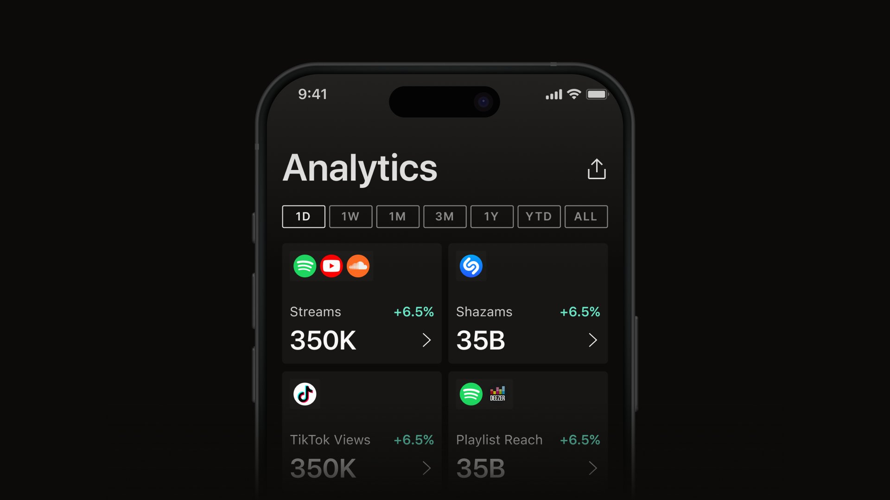
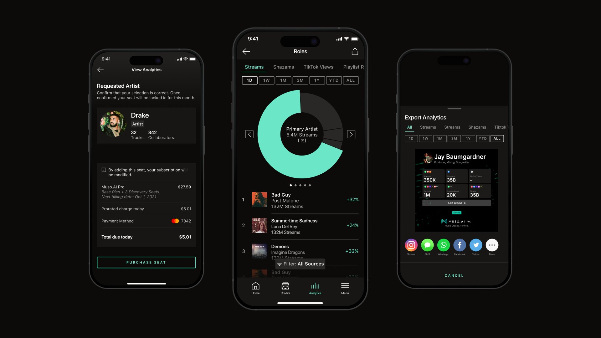
My role
I contributed to the product’s design system, translating recurring interface needs into reusable components and visual patterns. My focus was on consistency at both the component and screen level.
- Refined shared components to support a cohesive interface.
- Standardized recurring visual patterns across product screens.
- Organized reusable design foundations to support future product work.
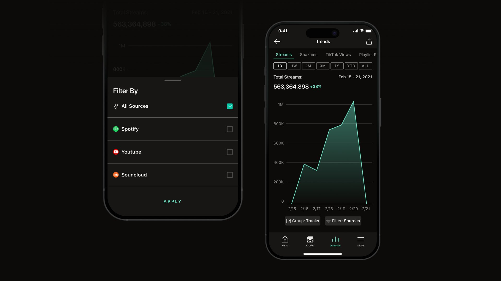
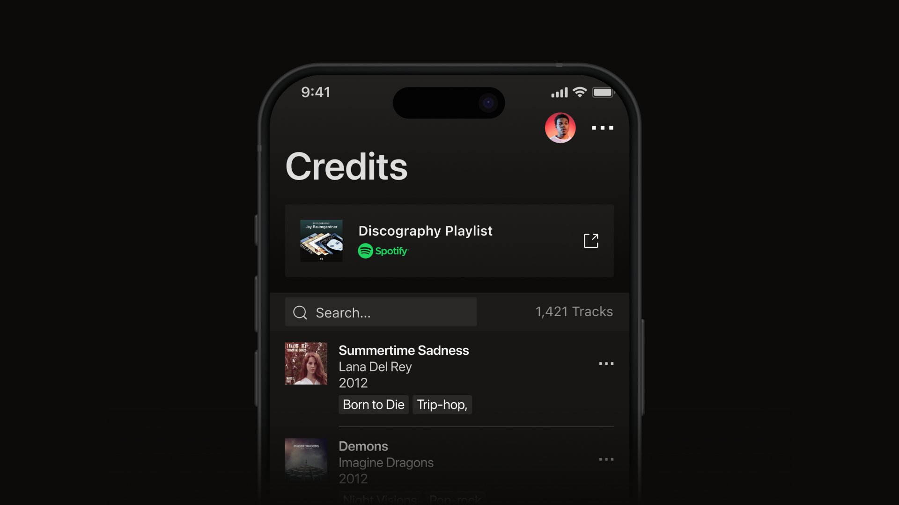
Challenge
A product that combines professional profiles, recording credits, and analytics needs a clear visual hierarchy. Different types of information must remain easy to distinguish while sharing a familiar interface.
The design system needed to support these varied contexts without introducing unnecessary differences between screens.
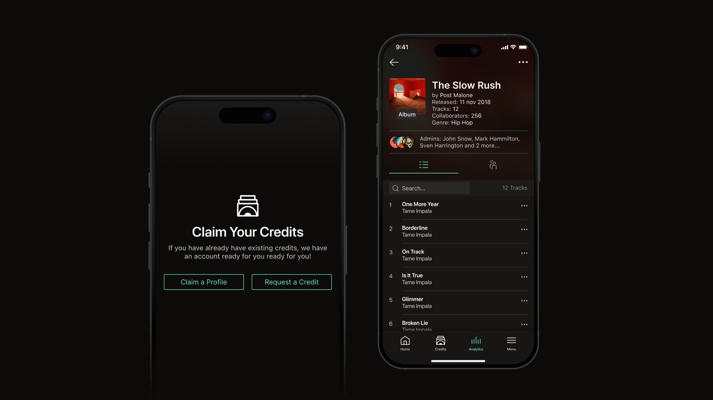
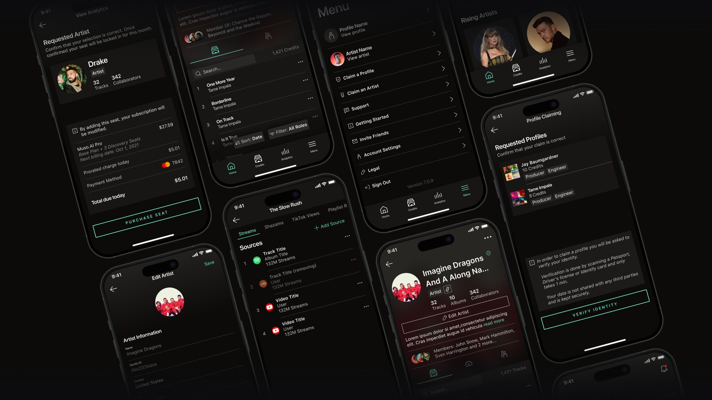
Approach
I focused on recurring elements and the relationships between them, refining components and shared patterns to establish a consistent visual language.
The goal was to make common interface decisions reusable, giving each screen the flexibility to present its content while maintaining the same underlying structure.
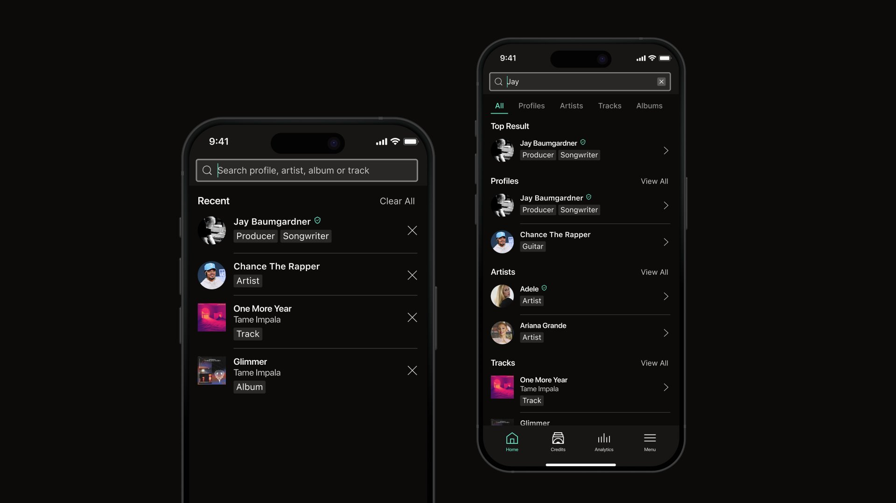
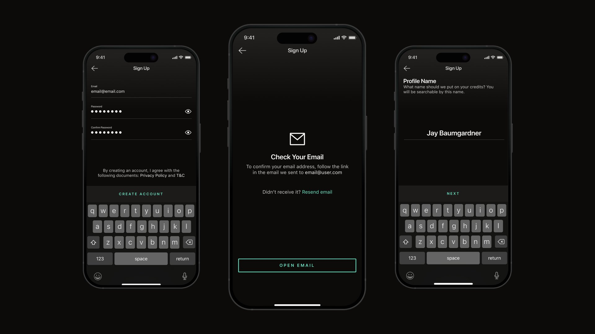
Outcome
My contribution helped bring greater visual consistency to Muso.AI and gave the team reusable building blocks for continued product development.
The resulting foundation supported a more cohesive experience across screens and made established design decisions easier to carry into new features.
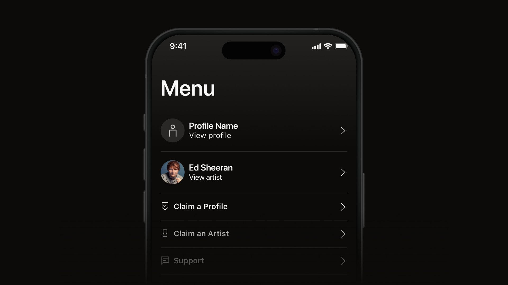
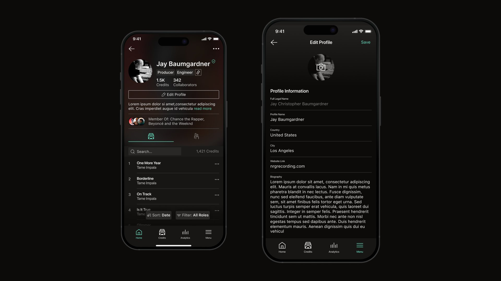
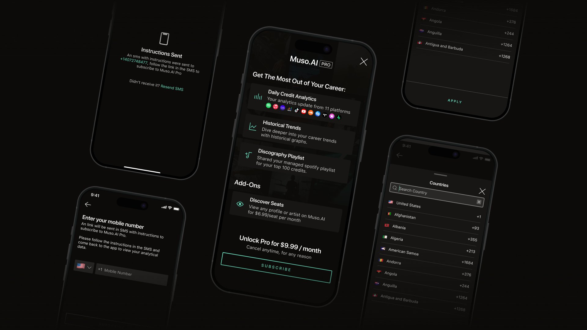
See the live product